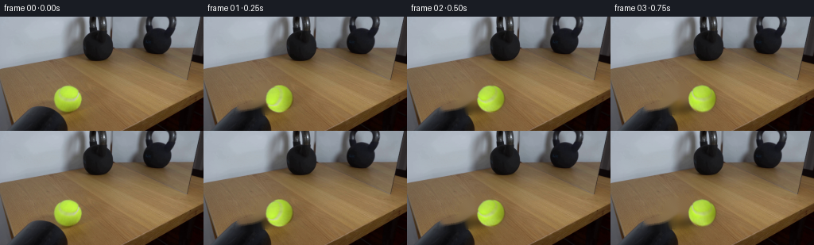
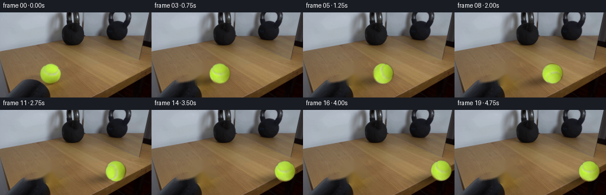
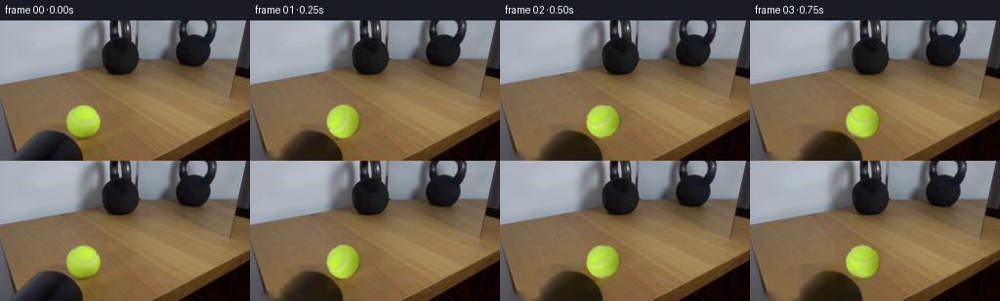
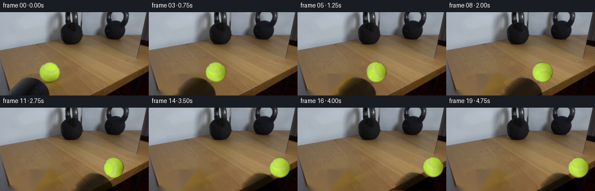

CODING AGENTS AS PIXEL WORLD MODELS
traex/DeepSeek-V4.1-Flash · 0156
点击播放 · 原生 RGB 像素
逐轮保存的候选
回放视频、检查图与代码变化。
每份候选均可单独播放。实际图片检查记录在下方工具轨迹中。
候选 01播放与检查图
点击播放 · 原生 RGB 像素


展开代码变化
--- 上一保存版本
+++ 本次保存版本
@@ -0,0 +1,219 @@
+from pathlib import Path
+
+import cv2
+import numpy as np
+from PIL import Image
+
+import artifact_io
+
+
+CASE_DIR = Path(__file__).resolve().parent
+WIDTH, HEIGHT = 256, 144
+FRAME_COUNT, FPS = 20, 4
+
+
+def _ball_geometry(frame):
+ hsv = cv2.cvtColor(frame, cv2.COLOR_RGB2HSV)
+ yellow = (
+ (hsv[:, :, 0] >= 25)
+ & (hsv[:, :, 0] <= 55)
+ & (hsv[:, :, 1] >= 80)
+ & (hsv[:, :, 2] >= 65)
+ ).astype(np.uint8)
+ count, labels, stats, _ = cv2.connectedComponentsWithStats(yellow, 8)
+ component = 1 + int(np.argmax(stats[1:, cv2.CC_STAT_AREA]))
+ points = np.column_stack(np.where(labels == component))[:, ::-1].astype(np.float32)
+ (cx, cy), radius = cv2.minEnclosingCircle(points)
+ return float(cx), float(cy), float(radius)
+
+
+def _make_background(frame, ball_cx, ball_cy, ball_radius):
+ yy, xx = np.mgrid[:HEIGHT, :WIDTH]
+ ball_hole = ((xx - ball_cx) ** 2 + (yy - ball_cy) ** 2) <= (ball_radius + 1.2) ** 2
+
+ # The low sun casts the ball's shadow down and to the left.
+ shadow_angle = np.deg2rad(-10.0)
+ dx, dy = xx - (ball_cx - 18.0), yy - (ball_cy + 12.0)
+ u = dx * np.cos(shadow_angle) + dy * np.sin(shadow_angle)
+ v = -dx * np.sin(shadow_angle) + dy * np.cos(shadow_angle)
+ shadow_hole = (u / 27.0) ** 2 + (v / 9.0) ** 2 <= 1.0
+
+ hole = (ball_hole | shadow_hole).astype(np.uint8) * 255
+ hole = cv2.dilate(hole, np.ones((3, 3), np.uint8), iterations=1)
+ plate = cv2.inpaint(
+ cv2.cvtColor(frame, cv2.COLOR_RGB2BGR),
+ hole,
+ 4,
+ cv2.INPAINT_TELEA,
+ )
+ plate = cv2.cvtColor(plate, cv2.COLOR_BGR2RGB)
+ return plate.astype(np.uint8), hole
+
+
+def _make_ball_sprite(frame, ball_cx, ball_cy, ball_radius):
+ pad = 3
+ half = int(np.ceil(ball_radius)) + pad
+ size = 2 * half + 1
+ local = np.arange(size, dtype=np.float32) - half
+ yy, xx = np.meshgrid(local, local)
+ distance = np.sqrt(xx * xx + yy * yy)
+
+ alpha = np.clip(ball_radius + 0.65 - distance, 0.0, 1.0)
+ alpha *= (distance <= ball_radius + 0.65)
+
+ map_x = (xx + ball_cx).astype(np.float32)
+ map_y = (yy + ball_cy).astype(np.float32)
+ sprite = cv2.remap(
+ frame,
+ map_x,
+ map_y,
+ interpolation=cv2.INTER_CUBIC,
+ borderMode=cv2.BORDER_REFLECT_101,
+ ).astype(np.float32)
+
+ # Split the captured ball into a fixed lighting field and rollable albedo.
+ mask = alpha.astype(np.float32)
+ sigma = 4.0
+ weighted = cv2.GaussianBlur(sprite * mask[:, :, None], (0, 0), sigma)
+ weight = cv2.GaussianBlur(mask, (0, 0), sigma)
+ illumination = weighted / np.maximum(weight[:, :, None], 1e-5)
+ illumination = np.maximum(illumination, 1.0)
+ albedo = sprite / illumination
+ return albedo.astype(np.float32), illumination.astype(np.float32), alpha.astype(np.float32), half
+
+
+def _rotated_ball(albedo, illumination, alpha, half, angle, squash=1.0):
+ size = albedo.shape[0]
+ matrix = cv2.getRotationMatrix2D((half, half), angle, 1.0)
+ if squash != 1.0:
+ scale = np.array(
+ [[squash, 0.0, half * (1.0 - squash)],
+ [0.0, 2.0 - squash, half * (1.0 - (2.0 - squash))]],
+ dtype=np.float64,
+ )
+ matrix = scale @ np.vstack([matrix, [0.0, 0.0, 1.0]])
+
+ rolled = cv2.warpAffine(
+ albedo,
+ matrix[:2],
+ (size, size),
+ flags=cv2.INTER_CUBIC,
+ borderMode=cv2.BORDER_REFLECT_101,
+ )
+ rendered_alpha = cv2.warpAffine(
+ alpha,
+ matrix[:2],
+ (size, size),
+ flags=cv2.INTER_LINEAR,
+ borderMode=cv2.BORDER_CONSTANT,
+ )
+ rendered_alpha = np.clip(rendered_alpha, 0.0, 1.0)
+ rgb = np.clip(rolled * illumination, 0.0, 255.0)
+ return rgb, rendered_alpha
+
+
+def _add_shadow(frame, ball_cx, ball_cy, contact_x):
+ yy, xx = np.mgrid[:HEIGHT, :WIDTH]
+ angle = np.deg2rad(-10.0)
+ dx, dy = xx - (ball_cx - 18.0), yy - (ball_cy + 12.0)
+ u = dx * np.cos(angle) + dy * np.sin(angle)
+ v = -dx * np.sin(angle) + dy * np.cos(angle)
+ density = 0.36 * np.exp(-0.5 * ((u / 22.0) ** 2 + (v / 5.6) ** 2))
+
+ # The kettlebell occludes the cast shadow when the ball reaches it.
+ density *= np.clip((contact_x + 4.0 - xx) / 7.0, 0.0, 1.0)
+ shaded = frame.astype(np.float32) * (1.0 - density[:, :, None])
+ return np.clip(shaded, 0.0, 255.0)
+
+
+def _composite_ball(frame, rgb, alpha, ball_cx, ball_cy, half):
+ size = alpha.shape[0]
+ left = int(round(ball_cx)) - half
+ top = int(round(ball_cy)) - half
+ x0, x1 = max(0, left), min(WIDTH, left + size)
+ y0, y1 = max(0, top), min(HEIGHT, top + size)
+ sx0, sx1 = x0 - left, x1 - left
+ sy0, sy1 = y0 - top, y1 - top
+
+ a = alpha[sy0:sy1, sx0:sx1, None]
+ out = frame.astype(np.float32)
+ out[y0:y1, x0:x1] = (
+ rgb[sy0:sy1, sx0:sx1] * a
+ + out[y0:y1, x0:x1] * (1.0 - a)
+ )
+ return np.clip(out, 0.0, 255.0).astype(np.uint8)
+
+
+def generate():
+ source = np.asarray(Image.open(CASE_DIR / "first_frame.png").convert("RGB"), dtype=np.uint8)
+ assert source.shape == (HEIGHT, WIDTH, 3)
+
+ ball_cx, ball_cy, ball_radius = _ball_geometry(source)
+ plate, _ = _make_background(source, ball_cx, ball_cy, ball_radius)
+ albedo, illumination, alpha, half = _make_ball_sprite(
+ source, ball_cx, ball_cy, ball_radius
+ )
+
+ gray = cv2.cvtColor(source, cv2.COLOR_RGB2GRAY)
+ contact_row = int(round(ball_cy))
+ dark_columns = np.flatnonzero(gray[contact_row] < 48)
+ dark_columns = dark_columns[dark_columns > 150]
+ kettlebell_edge = float(dark_columns[0])
+ contact_cx = kettlebell_edge - ball_radius + 0.7
+
+ contact_time = 3.75
+ speed = (contact_cx - ball_cx) / contact_time
+ restitution = 0.20
+ bounce_time = 0.34
+
+ frames = np.empty((FRAME_COUNT, HEIGHT, WIDTH, 3), dtype=np.uint8)
+ frames[0] = source
+
+ for index in range(1, FRAME_COUNT):
+ t = index / FPS
+ if t <= contact_time:
+ cx = ball_cx + speed * t
+ rolled_distance = cx - ball_cx
+ squash = 1.0
+ else:
+ rebound_time = t - contact_time
+ cx = contact_cx - speed * restitution * rebound_time
+ rolled_distance = (
+ contact_cx - ball_cx
+ - speed * restitution * rebound_time
+ )
+ # A barely visible squash-and-recover sells the first contact.
+ phase = min(rebound_time / 0.20, 1.0)
+ squash = 0.975 + 0.025 * phase
+
+ # A microscopic hop is consistent with a light ball striking a heavy bell.
+ if contact_time < t < contact_time + bounce_time:
+ phase = (t - contact_time) / bounce_time
+ cy = ball_cy - 1.3 * np.sin(np.pi * phase)
+ else:
+ cy = ball_cy
+
+ # With image y pointing down, positive rotation rolls toward screen-right.
+ angle = -np.degrees(rolled_distance / ball_radius)
+ rgb, rendered_alpha = _rotated_ball(
+ albedo, illumination, alpha, half, angle, squash
+ )
+
+ current = plate.astype(np.float32)
+ current = _add_shadow(current, cx, cy, contact_cx)
+ frames[index] = _composite_ball(
+ np.clip(current, 0.0, 255.0).astype(np.uint8),
+ rgb,
+ rendered_alpha,
+ cx,
+ cy,
+ half,
+ )
+
+ assert np.array_equal(frames[0], source)
+ artifact_io.save(frames, CASE_DIR)
+ return frames
+
+
+if __name__ == "__main__":
+ generate()
候选 02播放与检查图
点击播放 · 原生 RGB 像素

展开代码变化
--- 上一保存版本
+++ 本次保存版本
@@ -31,12 +31,20 @@
yy, xx = np.mgrid[:HEIGHT, :WIDTH]
ball_hole = ((xx - ball_cx) ** 2 + (yy - ball_cy) ** 2) <= (ball_radius + 1.2) ** 2
- # The low sun casts the ball's shadow down and to the left.
- shadow_angle = np.deg2rad(-10.0)
- dx, dy = xx - (ball_cx - 18.0), yy - (ball_cy + 12.0)
- u = dx * np.cos(shadow_angle) + dy * np.sin(shadow_angle)
- v = -dx * np.sin(shadow_angle) + dy * np.cos(shadow_angle)
- shadow_hole = (u / 27.0) ** 2 + (v / 9.0) ** 2 <= 1.0
+ gray = cv2.cvtColor(frame, cv2.COLOR_RGB2GRAY)
+ dark = (gray < 58).astype(np.uint8)
+ count, labels, stats, _ = cv2.connectedComponentsWithStats(dark, 8)
+ shadow_component = 0
+ for component in range(1, count):
+ x, y, w, h, area = stats[component]
+ if x < 30 and 105 <= y <= 125 and w > 50 and area > 800:
+ shadow_component = component
+ break
+ shadow = labels == shadow_component
+ shadow = cv2.morphologyEx(
+ shadow.astype(np.uint8), cv2.MORPH_CLOSE, np.ones((3, 3), np.uint8)
+ )
+ shadow_hole = shadow > 0
hole = (ball_hole | shadow_hole).astype(np.uint8) * 255
hole = cv2.dilate(hole, np.ones((3, 3), np.uint8), iterations=1)
@@ -47,7 +55,26 @@
cv2.INPAINT_TELEA,
)
plate = cv2.cvtColor(plate, cv2.COLOR_BGR2RGB)
- return plate.astype(np.uint8), hole
+ return plate.astype(np.uint8), hole, shadow_hole
+
+
+def _make_shadow_sprite(frame, plate, shadow_mask):
+ yy, xx = np.mgrid[:HEIGHT, :WIDTH]
+ table = np.maximum(plate.astype(np.float32).mean(axis=2), 1.0)
+ observed = frame.astype(np.float32).mean(axis=2)
+ opacity = np.clip((table - observed) / table, 0.0, 0.82)
+
+ # Restrict the extracted matte to the measured cast shadow and feather only
+ # its outer boundary; the interior keeps the source shadow's texture.
+ matte = opacity * shadow_mask.astype(np.float32)
+ inner = cv2.erode(shadow_mask.astype(np.uint8), np.ones((3, 3), np.uint8))
+ matte *= np.maximum(inner.astype(np.float32), 0.45)
+ matte = cv2.GaussianBlur(matte, (0, 0), 0.55)
+ matte = np.clip(matte, 0.0, 0.72)
+
+ x0, x1 = 10, 112
+ y0, y1 = 100, HEIGHT
+ return matte[y0:y1, x0:x1].copy(), x0, y0
def _make_ball_sprite(frame, ball_cx, ball_cy, ball_radius):
@@ -112,17 +139,17 @@
return rgb, rendered_alpha
-def _add_shadow(frame, ball_cx, ball_cy, contact_x):
- yy, xx = np.mgrid[:HEIGHT, :WIDTH]
- angle = np.deg2rad(-10.0)
- dx, dy = xx - (ball_cx - 18.0), yy - (ball_cy + 12.0)
- u = dx * np.cos(angle) + dy * np.sin(angle)
- v = -dx * np.sin(angle) + dy * np.cos(angle)
- density = 0.36 * np.exp(-0.5 * ((u / 22.0) ** 2 + (v / 5.6) ** 2))
-
- # The kettlebell occludes the cast shadow when the ball reaches it.
- density *= np.clip((contact_x + 4.0 - xx) / 7.0, 0.0, 1.0)
- shaded = frame.astype(np.float32) * (1.0 - density[:, :, None])
+def _add_shadow(frame, shadow, shadow_x, shadow_y, offset_x, offset_y):
+ height, width = shadow.shape
+ left = int(round(shadow_x + offset_x))
+ top = int(round(shadow_y + offset_y))
+ x0, x1 = max(0, left), min(WIDTH, left + width)
+ y0, y1 = max(0, top), min(HEIGHT, top + height)
+ sx0, sx1 = x0 - left, x1 - left
+ sy0, sy1 = y0 - top, y1 - top
+ density = shadow[sy0:sy1, sx0:sx1, None]
+ shaded = frame.astype(np.float32).copy()
+ shaded[y0:y1, x0:x1] *= 1.0 - density
return np.clip(shaded, 0.0, 255.0)
@@ -149,7 +176,8 @@
assert source.shape == (HEIGHT, WIDTH, 3)
ball_cx, ball_cy, ball_radius = _ball_geometry(source)
- plate, _ = _make_background(source, ball_cx, ball_cy, ball_radius)
+ plate, _, shadow_mask = _make_background(source, ball_cx, ball_cy, ball_radius)
+ shadow, shadow_x, shadow_y = _make_shadow_sprite(source, plate, shadow_mask)
albedo, illumination, alpha, half = _make_ball_sprite(
source, ball_cx, ball_cy, ball_radius
)
@@ -200,7 +228,14 @@
)
current = plate.astype(np.float32)
- current = _add_shadow(current, cx, cy, contact_cx)
+ current = _add_shadow(
+ current,
+ shadow,
+ shadow_x,
+ shadow_y,
+ cx - ball_cx,
+ cy - ball_cy,
+ )
frames[index] = _composite_ball(
np.clip(current, 0.0, 255.0).astype(np.uint8),
rgb,
候选 03播放与检查图
候选 04播放与检查图
点击播放 · 原生 RGB 像素


展开代码变化
--- 上一保存版本
+++ 本次保存版本
@@ -40,14 +40,17 @@
if x < 30 and 105 <= y <= 125 and w > 50 and area > 800:
shadow_component = component
break
- shadow = labels == shadow_component
- shadow = cv2.morphologyEx(
- shadow.astype(np.uint8), cv2.MORPH_CLOSE, np.ones((3, 3), np.uint8)
- )
- shadow_hole = shadow > 0
+ shadow_core = labels == shadow_component
+ shadow_core = cv2.morphologyEx(
+ shadow_core.astype(np.uint8), cv2.MORPH_CLOSE, np.ones((3, 3), np.uint8)
+ )
+ # Include the soft penumbra around the measured core so the original
+ # shadow leaves no stationary residue once it starts following the ball.
+ shadow_hole = cv2.dilate(
+ shadow_core, np.ones((9, 9), np.uint8), iterations=1
+ ) > 0
hole = (ball_hole | shadow_hole).astype(np.uint8) * 255
- hole = cv2.dilate(hole, np.ones((3, 3), np.uint8), iterations=1)
plate = cv2.inpaint(
cv2.cvtColor(frame, cv2.COLOR_RGB2BGR),
hole,
候选 05播放与检查图
点击播放 · 原生 RGB 像素

展开代码变化
--- 上一保存版本
+++ 本次保存版本
@@ -185,14 +185,21 @@
source, ball_cx, ball_cy, ball_radius
)
- gray = cv2.cvtColor(source, cv2.COLOR_RGB2GRAY)
+ # The kettlebell's left silhouette is the first sustained dark run across
+ # the ball's centerline. Its lit edge begins near x=239.
contact_row = int(round(ball_cy))
- dark_columns = np.flatnonzero(gray[contact_row] < 48)
- dark_columns = dark_columns[dark_columns > 150]
- kettlebell_edge = float(dark_columns[0])
- contact_cx = kettlebell_edge - ball_radius + 0.7
-
- contact_time = 3.75
+ luminance = cv2.cvtColor(source, cv2.COLOR_RGB2GRAY)[contact_row]
+ sustained_dark = np.convolve(
+ (luminance < 90),
+ np.ones(7, dtype=int),
+ mode="valid",
+ ) >= 5
+ candidates = np.flatnonzero(sustained_dark) + 3
+ candidates = candidates[candidates > 180]
+ kettlebell_edge = float(candidates[0])
+ contact_cx = kettlebell_edge - ball_radius - 0.4
+
+ contact_time = 3.90
speed = (contact_cx - ball_cx) / contact_time
restitution = 0.20
bounce_time = 0.34
候选 06播放与检查图
候选 07播放与检查图
点击播放 · 原生 RGB 像素
展开代码变化
--- 上一保存版本
+++ 本次保存版本
@@ -88,8 +88,9 @@
yy, xx = np.meshgrid(local, local)
distance = np.sqrt(xx * xx + yy * yy)
- alpha = np.clip(ball_radius + 0.65 - distance, 0.0, 1.0)
- alpha *= (distance <= ball_radius + 0.65)
+ sprite_radius = ball_radius - 0.35
+ alpha = np.clip(sprite_radius + 0.65 - distance, 0.0, 1.0)
+ alpha *= (distance <= sprite_radius + 0.65)
map_x = (xx + ball_cx).astype(np.float32)
map_y = (yy + ball_cy).astype(np.float32)
可观测工具轨迹
实际执行的命令与返回图片。
命令 1exit 0
/bin/bash -c "pwd && rg --files -g 'prompt.txt' -g 'GENERATION_RULES.md' -g 'first_frame.png' -g '"'!node_modules'"'"
命令 2exit 0
/bin/bash -c "find . -maxdepth 2 -type f -printf '%p %s bytes\\n' | sort"
命令 3exit 0
/bin/bash -c 'git status --short'
命令 4exit 0
/bin/bash -c 'cat prompt.txt'
命令 5exit 0
/bin/bash -c 'cat GENERATION_RULES.md'
命令 6exit 0
/bin/bash -c "sed -n '1,240p' artifact_io.py"
命令 7exit 127
/bin/bash -c "file first_frame.png && identify -verbose first_frame.png | sed -n '1,80p'"
命令 8exit 0
/bin/bash -c "python - <<'PY'
from PIL import Image
import numpy as np
im=Image.open('first_frame.png').convert('RGB')
a=np.array(im)
print('shape',a.shape,'dtype',a.dtype)
print('corners',a[0,0],a[0,-1],a[-1,0],a[-1,-1])
print('mean',a.mean((0,1)),'std',a.std((0,1)))
# 64x36 luminance ascii, invert? show quantized chars
l=a.mean(2)
# local block means
H,W=l.shape; hh,ww=36,64
m=l[:H//hh*hh,:W//ww*ww].reshape(hh,H//hh,ww,W//ww).mean((1,3))
chars=' .:-=+*#%@'
for row in m:
print(''.join(chars[min(len(chars)-1,int(v/256*len(chars)))] for v in row))
PY"命令 9exit 0
/bin/bash -c 'which ffmpeg || true; which convert || true; which python'
命令 10exit 0
/bin/bash -c "python - <<'PY' mods=['cv2','scipy','skimage','matplotlib','imageio','ffmpeg'] for m in mods: try: x=__import__(m); print(m,'ok',getattr(x,'__version__','')) except Exception as e: print(m,'NO',e) PY"
命令 11exit 0
/bin/bash -c "python - <<'PY'
from PIL import Image
im=Image.open('first_frame.png')
print(im.mode, im.size, im.info)
PY"命令 12exit 0
/bin/bash -c "python - <<'PY'
from PIL import Image
import numpy as np, cv2
im=np.array(Image.open('first_frame.png').convert('RGB'))
hsv=cv2.cvtColor(im,cv2.COLOR_RGB2HSV)
# HSV hist peaks
for ch,name in [(0,'H'),(1,'S'),(2,'V')]:
h=np.bincount(hsv[:,:,ch].ravel(),minlength=256)
inds=np.argsort(h)[-20:][::-1]
print(name, [(int(i),int(h[i])) for i in inds])
# color quantization kmeans
x=im.reshape(-1,3).astype(np.float32)
criteria=(cv2.TERM_CRITERIA_EPS+cv2.TERM_CRITERIA_MAX_ITER,50,.2)
_,lab,cent=cv2.kmeans(x,12,None,criteria,5,cv2.KMEANS_PP_CENTERS)
lab=lab.reshape(144,256)
print('centers')
for i,c in enumerate(cent.astype(int)):
ys,xs=np.where(lab==i)
print(i,c.tolist(),len(xs),'bbox', (xs.min(),ys.min(),xs.max(),ys.max()), 'mean', (xs.mean(),ys.mean()))
PY"命令 13exit 0
/bin/bash -c "python - <<'PY'
from PIL import Image
import numpy as np, cv2
im=np.array(Image.open('first_frame.png').convert('RGB'))
hsv=cv2.cvtColor(im,cv2.COLOR_RGB2HSV)
# masks
masks={
'ball':((hsv[:,:,0]>25)&(hsv[:,:,0]<55)&(hsv[:,:,1]>90)&(hsv[:,:,2]>80)),
'dark':((hsv[:,:,2]<65)),
'bright':(hsv[:,:,2]>185),
'gray':((hsv[:,:,1]<40)&(hsv[:,:,2]>80)),
'wood':((hsv[:,:,0]>5)&(hsv[:,:,0]<28)&(hsv[:,:,1]>50)&(hsv[:,:,2]>60)),
}
for n,m in masks.items():
m=(m.astype(np.uint8)*255)
num,l,stats,c=cv2.connectedComponentsWithStats(m,8)
comps=[]
for i in range(1,num):
x,y,w,h,a=stats[i]
if a>=10: comps.append((int(a),(int(x),int(y),int(w),int(h)),tuple(np.round(c[i],1))))
print('\\n',n,sorted(comps,reverse=True)[:20])
# grid char categories based HSV every 2 px
H,W=im.shape[:2]
for y in range(0,H,2):
line=''
for x in range(0,W,2):
p=hsv[y:y+2,x:x+2].reshape(-1,3).mean(0); h,s,v=p
if 25<h<55 and s>80 and v>70: ch='B'
elif v<55: ch='@'
elif v<90: ch='#'
elif s<35 and v>140: ch='M'
elif 5<h<30 and s>45: ch='w'
elif v>180: ch='+'
elif v>120: ch='.'
else: ch='-'
line+=ch
print(f'{y:03d} '+line)
PY"命令 14exit 0
/bin/bash -c "python - <<'PY'
import cv2, numpy as np
from PIL import Image
im=np.array(Image.open('first_frame.png'))
g=cv2.cvtColor(im,cv2.COLOR_RGB2GRAY)
e=cv2.Canny(g,40,100)
lines=cv2.HoughLinesP(e,1,np.pi/180,threshold=18,minLineLength=18,maxLineGap=4)
out=[]
for l in lines[:,0]:
x1,y1,x2,y2=map(int,l); length=((x2-x1)**2+(y2-y1)**2)**.5; ang=np.degrees(np.arctan2(y2-y1,x2-x1))
out.append((round(length,1),round(ang,1),(x1,y1,x2,y2)))
for x in sorted(out,reverse=True)[:60]: print(x)
PY"命令 15exit 0
/bin/bash -c "python - <<'PY'
from PIL import Image
im=Image.open('first_frame.png')
# create 4x upscaled nearest for numeric layout, plus color coordinate probe
im.resize((1024,576),Image.Resampling.NEAREST).save('.tmp/first_nearest.png')
# print RGB grid at 8 px
import numpy as np
a=np.array(im)
for y in range(0,144,8):
print(f'{y:3}',end=' ')
for x in range(0,256,8):
p=a[y:y+8,x:x+8].mean((0,1)).astype(int)
print('%02x%02x%02x'%tuple(p),end=' ')
print()
PY"命令 16exit 0
/bin/bash -c "python - <<'PY'
from PIL import Image
import numpy as np
im=np.array(Image.open('first_frame.png'))
# Print cropped ball exact mask dimensions and rows of RGB/HSV
x0,x1,y0,y1=60,110,80,125
hsv=__import__('cv2').cvtColor(im,__import__('cv2').COLOR_RGB2HSV)
m=(hsv[:,:,0]>25)&(hsv[:,:,0]<55)&(hsv[:,:,1]>80)&(hsv[:,:,2]>65)
for y in range(y0,y1):
s=''.join('#' if m[y,x] else ('+' if np.linalg.norm(im[y,x]-[120,90,50])<25 else '.') for x in range(x0,x1))
print(f'{y:3} {s}')
# central y samples
for y in range(86,122,3):
print('y',y,[(x,im[y,x].tolist()) for x in range(62,108,4)])
PY"命令 17exit 0
/bin/bash -c "python - <<'PY'
from PIL import Image
import numpy as np, cv2
im=np.array(Image.open('first_frame.png'))
# larger key stats, black pixels
g=im.mean(2); dark=(g<45)
# connected components all dark
num,lab,stats,cent=cv2.connectedComponentsWithStats(dark.astype('uint8'),8)
print(sorted([(int(stats[i,4]),tuple(map(int,stats[i,:4])),tuple(np.round(cent[i],1))) for i in range(1,num) if stats[i,4]>15],reverse=True))
# edge maps over 2 px blocks
g=cv2.cvtColor(im,cv2.COLOR_RGB2GRAY)
e=cv2.Canny(g,30,70)
for y in range(0,144,2):
line=''
for x in range(0,256,2):
z=e[y:y+2,x:x+2].max()
line += '#' if z else ' '
print(f'{y:03d} {line}')
PY"命令 18exit 0
/bin/bash -c "python - <<'PY'
from PIL import Image
import numpy as np, cv2
im=np.array(Image.open('first_frame.png'))
hsv=cv2.cvtColor(im,cv2.COLOR_RGB2HSV)
# detailed map of right region 150:256 x 70:144, 2px block classes based luminance/color
for y in range(70,144,2):
line=''
for x in range(150,256,2):
p=im[y:y+2,x:x+2].reshape(-1,3).mean(0); h,s,v=hsv[y:y+2,x:x+2].reshape(-1,3).mean(0)
if v<35: ch='@'
elif v<55: ch='#'
elif v<80: ch='X'
elif s<25 and v>150: ch='M'
elif h<30 and s>45: ch='w'
elif v>150: ch='+'
elif v>110: ch='.'
else: ch='-'
line+=ch
print(f'{y:03d} {line}')
PY"命令 19exit 0
/bin/bash -c "python - <<'PY'
from PIL import Image
import numpy as np, cv2
im=np.array(Image.open('first_frame.png'))
# crop ball and fit sphere center/radius using mask edges
hsv=cv2.cvtColor(im,cv2.COLOR_RGB2HSV)
m=(hsv[:,:,0]>25)&(hsv[:,:,0]<55)&(hsv[:,:,1]>80)&(hsv[:,:,2]>65)
y,x=np.where(m)
# min enclosing circle
(cx,cy),r=cv2.minEnclosingCircle(np.column_stack([x,y]).astype('float32'))
print(cx,cy,r)
# Fit ball silhouette maybe ellipse
cnt=max(cv2.findContours(m.astype('uint8'),cv2.RETR_EXTERNAL,cv2.CHAIN_APPROX_NONE)[0],key=cv2.contourArea)
print(cv2.fitEllipse(cnt))
# inspect black component shape and box
for i in range(144):
pass
# sample ball edges around circle via gradient
for y0 in range(84,124):
xs=np.where(m[y0])[0]
if len(xs): print(y0,xs.min(),xs.max(),len(xs))
PY"命令 20exit 0
/bin/bash -c 'python generate.py'
命令 21exit 0
/bin/bash -c "python - <<'PY'
from PIL import Image
import numpy as np, cv2
src=np.array(Image.open('first_frame.png').convert('RGB'))
frames=np.stack([np.array(Image.open(f'frames/{i:02d}.png').convert('RGB')) for i in range(20)])
print('frames',frames.shape,frames.dtype)
print('frame0 exact',np.array_equal(frames[0],src),'max diff',np.abs(frames[0].astype(int)-src.astype(int)).max())
print('mean rgb per frame')
for i,f in enumerate(frames):
hsv=cv2.cvtColor(f,cv2.COLOR_RGB2HSV)
ball=(hsv[:,:,0]>25)&(hsv[:,:,0]<55)&(hsv[:,:,1]>80)&(hsv[:,:,2]>65)
y,x=np.where(ball)
if len(x): print(i, 'ball',len(x), 'bbox', (x.min(),y.min(),x.max(),y.max()), 'centroid',(round(x.mean(),2),round(y.mean(),2)), 'mean',tuple(np.round(f.mean((0,1)),2)))
else: print(i,'no ball')
PY"命令 22exit 0
/bin/bash -c "python - <<'PY'
from PIL import Image
import numpy as np
# compare background changed region between frame1 and original excluding ball/shadow
src=np.array(Image.open('first_frame.png')).astype(int)
f=np.array(Image.open('frames/01.png')).astype(int)
d=np.abs(f-src).max(2)
print('frame1 diff bbox',np.where(d>4)[1].min(),np.where(d>4)[0].min(),np.where(d>4)[1].max(),np.where(d>4)[0].max())
# overall frame diff against source
for i in [1,5,10,15,16,19]:
f=np.array(Image.open(f'frames/{i:02d}.png')).astype(int);d=np.abs(f-src).max(2)
print(i,'changed>4',int((d>4).sum()),'mean',round(d.mean(),2),'max',d.max())
PY"命令 23exit 0
/bin/bash -c "python - <<'PY'
from PIL import Image
import numpy as np
im=Image.open('frames/08.png')
# nearest upscaled crop of ball and scene
im.crop((100,70,210,135)).resize((880,520),Image.Resampling.NEAREST).save('.tmp/crop08.png')
im.crop((150,70,256,144)).resize((848,592),Image.Resampling.NEAREST).save('.tmp/crop08right.png')
PY"命令 24exit 0
/bin/bash -c "python - <<'PY'
from PIL import Image
import numpy as np
# Make close-up numeric composites as ASCII hue/luminance to spot artifacts.
a=np.array(Image.open('frames/08.png'))
for y in range(80,130,2):
line=''
for x in range(140,220,1):
r,g,b=a[y,x]; v=max(r,g,b)
if r>130 and g>130 and b<110: ch='B'
elif v<30: ch='@'
elif v<55: ch='#'
elif v<90: ch='X'
elif r>g*1.2 and g>b*1.25: ch='w'
elif v>180: ch='+'
elif v>120: ch='.'
else: ch='-'
line+=ch
print(f'{y:03d} {line}')
PY"命令 25exit 0
/bin/bash -c "python - <<'PY'
from PIL import Image
import numpy as np
src=np.array(Image.open('first_frame.png')).astype(int)
# compare plate indirectly via frame1: estimate ball mask and look around sprite boundary
f=np.array(Image.open('frames/01.png')).astype(int)
# print pixel diffs in region for x30:125 y80:130 by 2px block max
d=np.abs(f-src).max(2)
for y in range(78,132,2):
line=''
for x in range(24,130,2):
v=d[y:y+2,x:x+2].max()
if v<5: ch=' '
elif v<15: ch='.'
elif v<30: ch=':'
elif v<60: ch='*'
elif v<100: ch='O'
else: ch='#'
line+=ch
print(f'{y:03d} {line}')
PY"命令 26exit 0
/bin/bash -c "python - <<'PY'
from PIL import Image
import numpy as np, cv2
src=np.array(Image.open('first_frame.png')).astype(int)
f=np.array(Image.open('frames/01.png')).astype(int)
# ball estimated displacement center +10.3 x. examine location far away at old ball after excluding shadow region
# Compare original plate candidates to actual neighboring wood via median line/plane reconstruction.
# Print average rows around ball to identify shadow influence.
for y in range(86,124,3):
vals=[]
for x in range(40,130,5): vals.append(tuple(src[y,x]))
print(y,vals)
PY"命令 27exit 0
/bin/bash -c "python generate.py && python - <<'PY'
from PIL import Image
import numpy as np, cv2
src=np.array(Image.open('first_frame.png').convert('RGB'))
frames=np.stack([np.array(Image.open(f'frames/{i:02d}.png').convert('RGB')) for i in range(20)])
print('frame0 exact',np.array_equal(frames[0],src),'dtype',frames.dtype,'shape',frames.shape)
for i,f in enumerate(frames):
hsv=cv2.cvtColor(f,cv2.COLOR_RGB2HSV)
ball=(hsv[:,:,0]>25)&(hsv[:,:,0]<55)&(hsv[:,:,1]>80)&(hsv[:,:,2]>65)
y,x=np.where(ball)
d=np.abs(f.astype(int)-src.astype(int)).max(2)
print(i,'ball',len(x),'bbox',(int(x.min()),int(y.min()),int(x.max()),int(y.max())),'centroid',(round(x.mean(),2),round(y.mean(),2)),'changed>4',int((d>4).sum()))
PY"命令 28exit 0
/bin/bash -c "python - <<'PY'
from PIL import Image
import numpy as np
im=np.array(Image.open('first_frame.png'))
g=im.mean(2)
for y in range(95,125):
xs=np.where(g[y]<48)[0]; xs=xs[xs>150]
print(y, xs[:10].tolist(), 'first',int(xs[0]) if len(xs) else None)
PY"命令 29exit 0
/bin/bash -c "python - <<'PY'
from PIL import Image
import numpy as np, cv2
f=np.array(Image.open('frames/10.png'))
# compare table in former ball/shadow region to adjacent regions at same rows
for y0,y1 in [(110,120),(120,130),(130,140),(140,144)]:
print('rows',y0,y1)
for x0,x1 in [(0,18),(18,40),(40,65),(65,90),(90,115),(115,150),(150,180)]:
a=f[y0:y1,x0:x1]
print((x0,x1),tuple(np.round(a.mean((0,1)),1)), 'std',round(float(a.std()),1))
# print luma map at frame10 lower-left by 2 px blocks
g=f.mean(2)
chars=' .:-=+*#%@'
for y in range(104,144,2):
print(f'{y:03d} '+''.join(chars[min(9,int(g[y:y+2,x:x+2].mean()/256*10))] for x in range(0,150,2)))
PY"命令 30exit 0
/bin/bash -c "python - <<'PY'
from PIL import Image
import numpy as np, cv2
src=np.array(Image.open('first_frame.png'))
hsv=cv2.cvtColor(src,cv2.COLOR_RGB2HSV)
yellow=(hsv[:,:,0]>=25)&(hsv[:,:,0]<=55)&(hsv[:,:,1]>=80)&(hsv[:,:,2]>=65)
print('yellow bbox and connected')
num,lab,stats,cent=cv2.connectedComponentsWithStats(yellow.astype('uint8'),8)
for i in range(1,num):
print(i,stats[i].tolist())
# examine all color against ball yellow location
# black component shadow region count
for th in [45,55,65,75,85]:
m=src.mean(2)<th
n,l,s,c=cv2.connectedComponentsWithStats(m.astype('uint8'),8)
print('th',th,[(int(s[i,4]),tuple(map(int,s[i,:4]))) for i in range(1,n) if s[i,4]>100])
PY"命令 31exit 0
/bin/bash -c "python - <<'PY'
from PIL import Image
import numpy as np, cv2
src=np.array(Image.open('first_frame.png')).astype(float)
# Infer table plate from untouched pixels using row-wise smooth model: inspect background texture around shadow.
# Difference original shadow pixels vs symmetric upper table? Build 2D luma map at 1px range x0:110 y100:144.
g=src.mean(2)
chars=' .:-=+*#%@'
for y in range(100,144):
print(f'{y:03d} '+''.join(chars[min(9,int(g[y,x]/256*10))] for x in range(0,120)))
PY"命令 32exit 0
/bin/bash -c "python - <<'PY'
from PIL import Image
import numpy as np, cv2
src=np.array(Image.open('first_frame.png'))
g=cv2.cvtColor(src,cv2.COLOR_RGB2GRAY)
for th in [40,45,50,55,60,65,70]:
m=(g<th).astype('uint8')
n,l,s,c=cv2.connectedComponentsWithStats(m,8)
print('\\nTH',th)
for i in range(1,n):
x,y,w,h,a=s[i]
if x<30 and y>90 and w>50: print(i,'area',a,'bbox',x,y,w,h,'cent',c[i])
PY"命令 33exit 0
/bin/bash -c "python - <<'PY'
from PIL import Image
import numpy as np
src=np.array(Image.open('first_frame.png'))
f=np.array(Image.open('frames/10.png'))
# frame10 vs expected plate: assess region x40:120 y100:144 old shadow. Need frame after moving sprite there, shadow translated by 100 => no shadow at x40:120 except old location.
for box in [(0,20,110,144),(20,50,110,144),(50,110,110,144),(110,150,110,144),(150,200,110,144)]:
x0,x1,y0,y1=box
print(box,'src',tuple(np.round(src[y0:y1,x0:x1].mean((0,1)),1)),'f10',tuple(np.round(f[y0:y1,x0:x1].mean((0,1)),1)))
PY"命令 34exit 0
/bin/bash -c "sed -n '1,260p' player_template.html"
命令 35exit 0
/bin/bash -c "find . -maxdepth 2 -type f -printf '%p %s bytes\\n' | sort"
命令 36exit 0
/bin/bash -c "python - <<'PY'
from PIL import Image
import numpy as np
for i in [14,15,16]:
a=np.array(Image.open(f'frames/{i:02d}.png'))
# map ball vs kettlebell collision overlap x 200:256 y90:125 classes
print('\\nframe',i)
for y in range(92,125,2):
line=''
for x in range(200,256):
r,g,b=a[y,x];v=max(r,g,b)
if r>130 and g>130 and b<115: ch='B'
elif v<35:ch='@'
elif v<60:ch='#'
elif v<90:ch='X'
elif v>150:ch='+'
else:ch='.'
line+=ch
print(f'{y:03d}',line)
PY"命令 37exit 0
/bin/bash -c "python - <<'PY'
from PIL import Image
import numpy as np
# exact compare frame0 image loaded from npz path? Verify packed decode equals frames for all indices
z=np.load('pixels.npz')['pixels']
for i in range(20):
v=z[:,:,i].astype(np.uint32)
rgb=np.stack([(v>>16)&255,(v>>8)&255,v&255],axis=2).astype(np.uint8)
f=np.array(Image.open(f'frames/{i:02d}.png'))
if not np.array_equal(rgb,f): print('mismatch',i)
print('npz shape',z.shape,z.dtype)
# Verify delta decode from HTML DATA manually by extracting JSON? use regex and json
import re,json,base64
s=open('index.html').read();data=json.loads(re.search(r'const DATA=(.*?),W=',s).group(1))
def unpack(x):
b=base64.b64decode(x);return np.frombuffer(b,dtype='<u4')
fr=[unpack(data['first'])]
for e in data['deltas']:
f=fr[-1].copy();p=unpack(e);i=0
while i<len(p):
st=int(p[i]);n=int(p[i+1]);i+=2;f[st:st+n]=p[i:i+n];i+=n
fr.append(f)
print('deltas',len(data['deltas']),'decoded',len(fr),'ids',data['id'])
for i in range(20):
if not np.array_equal(fr[i],z[:,:,i].reshape(-1)): print('delta mismatch',i)
PY"命令 38exit 0
/bin/bash -c "python - <<'PY'
from PIL import Image
import numpy as np
# Sample edge/trail continuity: compare frames at each location against a low-frequency table estimate.
# print original and generated frame 10 2x nearest crop for visual numeric checks
for i in [1,8,15,19]:
Image.open(f'frames/{i:02d}.png').crop((0,70,256,144)).resize((1024,296),Image.Resampling.NEAREST).save(f'.tmp/strip{i:02d}.png')
PY"命令 39exit 0
/bin/bash -c "python - <<'PY'
from PIL import Image
import numpy as np
for i in [1,8,15,19]:
a=np.array(Image.open(f'frames/{i:02d}.png'))
print('\\nFRAME',i,'lower left block mean')
for y in range(104,144,4):
print(y,[tuple(a[y:y+4,x:x+4].mean((0,1)).astype(int)) for x in range(0,160,20)])
PY"命令 40exit 0
/bin/bash -c "python - <<'PY'
import cv2,numpy as np
from PIL import Image
im=np.array(Image.open('first_frame.png'))
g=cv2.cvtColor(im,cv2.COLOR_RGB2GRAY)
for th in [45,55,65]:
dark=(g<th).astype('uint8')
# isolate right kettlebell component
n,l,s,c=cv2.connectedComponentsWithStats(dark,8)
i=1+np.argmax(s[1:,4]); m=(l==i).astype('uint8')
# distance to dark = distance transform of inverted m; zero inside dark
dt=cv2.distanceTransform(1-m,cv2.DIST_L2,5)
print('th',th,'comp',s[i].tolist())
for y in [100,103,106,110]:
vals=[(x,round(float(dt[y,x]),2)) for x in range(215,241,2)]
print(y,vals)
PY"命令 41exit 0
/bin/bash -c "python - <<'PY'
from PIL import Image
import numpy as np
for i in [0,1,8,15,16,19]:
im=Image.open(f'frames/{i:02d}.png')
im.resize((1024,576),Image.Resampling.NEAREST).save(f'.tmp/up{i:02d}.png')
PY"命令 42exit 0
/bin/bash -c "python - <<'PY'
from PIL import Image
import numpy as np, cv2
im=np.array(Image.open('first_frame.png'))
# Print HSV/RGB of points in shadow and plate areas at same y
for y in [112,116,120,124,128,132,136,140]:
print('y',y)
for x in [20,30,40,50,60,70,80,90,100,110,120]:
print(x,im[y,x].tolist(),end='; ')
print()
PY"命令 43exit 0
/bin/bash -c "python - <<'PY'
from PIL import Image
import numpy as np
f=np.array(Image.open('frames/10.png'))
# block mean around expected shadow translation x +100 from original (source shadow x15:85 y113:143), so expected x115:185; and old background x15:85 should be restored.
for y0 in [112,116,120,124,128,132,136,140]:
print('y',y0,'old',tuple(np.round(f[y0:y0+4,15:85].mean((0,1)),1)),'new',tuple(np.round(f[y0:y0+4,115:185].mean((0,1)),1)))
PY"命令 44exit 1
/bin/bash -c "python - <<'PY'
from PIL import Image
import numpy as np
im=np.array(Image.open('first_frame.png'))
# scan for near-black shadow darkening: original values are extremely dark and shaped like hardish cast shadow.
# Find top 2000 darkest pixels bbox/mean
flat=im.mean(2).ravel();idx=np.argsort(flat)[:2500]
y,x=np.unravel_index(idx,flat.shape)
print(x.min(),x.max(),y.min(),y.max(),x.mean(),y.mean())
for y0 in range(110,144,4):
xs=x[(y>=y0)&(y<y0+4)]
if len(xs): print(y0,len(xs),xs.min(),xs.max(),xs.mean())
PY"命令 45exit 1
/bin/bash -c "python - <<'PY'
from PIL import Image
import numpy as np
im=np.array(Image.open('first_frame.png'))
flat=im.mean(2).ravel();idx=np.argsort(flat)[:2500]
y,x=np.unravel_index(idx,flat.shape)
print(x.min(),x.max(),y.min(),y.max(),x.mean(),y.mean())
for y0 in range(110,144,4):
xs=x[(y>=y0)&(y<y0+4)]
if len(xs): print(y0,len(xs),xs.min(),xs.max(),xs.mean())
PY"命令 46exit 0
/bin/bash -c "python generate.py && python - <<'PY'
from PIL import Image
import numpy as np, cv2, re, json, base64
src=np.array(Image.open('first_frame.png').convert('RGB'))
frames=np.stack([np.array(Image.open(f'frames/{i:02d}.png').convert('RGB')) for i in range(20)])
assert frames.shape==(20,144,256,3) and frames.dtype==np.uint8
assert np.array_equal(frames[0],src)
print('frame 0 exact; shape',frames.shape)
for i in [0,5,10,15,16,19]:
hsv=cv2.cvtColor(frames[i],cv2.COLOR_RGB2HSV)
ball=(hsv[:,:,0]>25)&(hsv[:,:,0]<55)&(hsv[:,:,1]>80)&(hsv[:,:,2]>65)
y,x=np.where(ball)
print(i,'ball area',len(x),'bbox',(int(x.min()),int(y.min()),int(x.max()),int(y.max())),'mean',tuple(np.round(frames[i].mean((0,1)),2)))
# Verify npz and HTML delta reconstruction
z=np.load('pixels.npz')['pixels']
for i in range(20):
v=z[:,:,i].astype(np.uint32)
rgb=np.stack([(v>>16)&255,(v>>8)&255,v&255],axis=2).astype(np.uint8)
assert np.array_equal(rgb,frames[i]), i
s=open('index.html').read();data=json.loads(re.search(r'const DATA=(.*?),W=',s).group(1))
def unpack(x): return np.frombuffer(base64.b64decode(x),dtype='<u4')
fr=[unpack(data['first'])]
for e in data['deltas']:
f=fr[-1].copy();p=unpack(e);j=0
while j<len(p):
st=int(p[j]);n=int(p[j+1]);j+=2;f[st:st+n]=p[j:j+n];j+=n
fr.append(f)
assert len(fr)==20
for i in range(20): assert np.array_equal(fr[i],z[:,:,i].reshape(-1)),i
print('npz and delta player verified: 20 frames, 256x144, 4 fps')
PY"命令 47exit 0
/bin/bash -c "python - <<'PY'
from PIL import Image
import numpy as np
for i in [0,1,8,15,16,19]:
a=np.array(Image.open(f'frames/{i:02d}.png'))
# Ensure values in object and table remain finite and within range; detect discontinuities at frame edges.
print(i,'range',a.min(),a.max(),'nonblack',int((a.max(2)>0).sum()))
# Compare old shadow region before/after changed plate, only low-frequency means.
for i in [1,8,15,19]:
a=np.array(Image.open(f'frames/{i:02d}.png'))
print('old shadow mean frame',i,tuple(np.round(a[115:144,15:85].mean((0,1)),1)))
PY"命令 48exit 0
/bin/bash -c "python - <<'PY'
from PIL import Image
import numpy as np
for i in [0,8,15,19]:
im=Image.open(f'frames/{i:02d}.png')
print('saving',i,im.size)
# side by side reference and generated, enlarged nearest for local inspection
a=Image.open('first_frame.png').resize((512,288),Image.Resampling.NEAREST)
b=im.resize((512,288),Image.Resampling.NEAREST)
out=Image.new('RGB',(1024,288));out.paste(a,(0,0));out.paste(b,(512,0));out.save(f'.tmp/compare{i:02d}.png')
PY"命令 49exit 0
/bin/bash -c 'sha256sum first_frame.png frames/00.png'
命令 50exit 0
/bin/bash -c "python -m py_compile generate.py artifact_io.py && python - <<'PY'
from pathlib import Path
from PIL import Image
files=sorted(Path('frames').glob('*.png'))
print('frame_files',len(files))
for p in files:
im=Image.open(p)
assert im.mode=='RGB' and im.size==(256,144)
print('all frame PNGs are 256x144 RGB')
PY"命令 51exit 0
/bin/bash -c "python - <<'PY'
from PIL import Image
import numpy as np,cv2
im=np.array(Image.open('first_frame.png'))
g=cv2.cvtColor(im,cv2.COLOR_RGB2GRAY)
for th in [45,50,55,60]:
m=(g<th).astype('uint8'); n,l,s,c=cv2.connectedComponentsWithStats(m,8)
i=1+np.argmax(s[1:,4]); comp=(l==i)
print('th',th,'bbox',s[i].tolist())
for y in range(98,108):
xs=np.where(comp[y])[0]
print(y,xs.min() if len(xs) else None, end='; ')
print()
PY"命令 52exit 0
/bin/bash -c "python - <<'PY'
from PIL import Image
import numpy as np
src=np.array(Image.open('first_frame.png'))
# identify edge transition along contact center row using gradient / chroma
for y in [99,100,101,102,103,104,105,106,107,108,109,110]:
row=src[y]
print('y',y,[(x,row[x].tolist()) for x in range(228,250,2)])
PY"命令 53exit 0
/bin/bash -c "python - <<'PY'
from PIL import Image
import numpy as np
src=np.array(Image.open('first_frame.png'))
# Analyze ball circular boundary against shadow: get ball boundary distance from center 84.5,103.4
hsv=__import__('cv2').cvtColor(src,__import__('cv2').COLOR_RGB2HSV)
m=(hsv[:,:,0]>25)&(hsv[:,:,0]<55)&(hsv[:,:,1]>80)&(hsv[:,:,2]>65)
for y in range(100,121):
xs=np.where(m[y])[0]
print(y, xs.min(), xs.max())
PY"命令 54exit 0
/bin/bash -c "python - <<'PY'
from PIL import Image
import numpy as np, cv2
src=np.array(Image.open('first_frame.png'))
# quantify actual ball edge beyond yellow mask: radial profile around center, list pixel colors along horizontal/vertical rays
cx,cy=84.5,103.4
for ang in [0,90,180,270]:
print('angle',ang)
for r in np.arange(12,21,.5):
x=int(round(cx+r*np.cos(np.deg2rad(ang))));y=int(round(cy+r*np.sin(np.deg2rad(ang))))
print(r,(x,y),src[y,x].tolist(),end='; ')
print()
PY"命令 55exit 1
/bin/bash -c "python generate.py && python - <<'PY'
from PIL import Image
import numpy as np,cv2
src=np.array(Image.open('first_frame.png').convert('RGB'))
frames=np.stack([np.array(Image.open(f'frames/{i:02d}.png').convert('RGB')) for i in range(20)])
assert frames.shape==(20,144,256,3) and frames.dtype==np.uint8 and np.array_equal(frames[0],src)
for i in range(20):
hsv=cv2.cvtColor(frames[i],cv2.COLOR_RGB2HSV)
b=(hsv[:,:,0]>25)&(hsv[:,:,0]<55)&(hsv[:,:,1]>80)&(hsv[:,:,2]>65)
y,x=np.where(b)
print(i,'ball centroid',tuple(np.round([x.mean(),y.mean()],2)),'bbox',(x.min(),y.min(),x.max(),y.max()))
PY"命令 56exit 0
/bin/bash -c "python - <<'PY'
from PIL import Image
import numpy as np, cv2
src=np.array(Image.open('first_frame.png'))
y=int(round(103.4)); lum=cv2.cvtColor(src,cv2.COLOR_RGB2GRAY)[y]
for th in [70,80,90,100,110,120]:
d=lum<th
sus=np.convolve(d,np.ones(7,dtype=int),mode='valid')>=5
c=np.flatnonzero(sus)+3;c=c[c>180]
print(th,c[:5], [(x,int(lum[x])) for x in range(226,244,2)])
PY"命令 57exit 0
/bin/bash -c "python generate.py && python - <<'PY'
from PIL import Image
import numpy as np,cv2
src=np.array(Image.open('first_frame.png').convert('RGB'))
frames=np.stack([np.array(Image.open(f'frames/{i:02d}.png').convert('RGB')) for i in range(20)])
assert frames.shape==(20,144,256,3) and frames.dtype==np.uint8 and np.array_equal(frames[0],src)
for i in range(20):
hsv=cv2.cvtColor(frames[i],cv2.COLOR_RGB2HSV)
b=(hsv[:,:,0]>25)&(hsv[:,:,0]<55)&(hsv[:,:,1]>80)&(hsv[:,:,2]>65)
y,x=np.where(b)
print(i,'ball centroid',tuple(np.round([x.mean(),y.mean()],2)),'bbox',(x.min(),y.min(),x.max(),y.max()))
PY"命令 58exit 0
/bin/bash -c "python - <<'PY'
from PIL import Image
import numpy as np
frames=np.stack([np.array(Image.open(f'frames/{i:02d}.png')) for i in range(20)])
# adjacent frame MAE excluding no-change areas; confirms continuous motion
for i in range(1,20):
d=np.abs(frames[i].astype(float)-frames[i-1].astype(float)).mean()
print(i,round(float(d),3))
PY"命令 59exit 0
/bin/bash -c "python - <<'PY'
from PIL import Image
import numpy as np
src=np.array(Image.open('first_frame.png'))
# table and shadow only: compare generated frame 8 in old region against adjacent table rows after accounting for perspective gradient
# print residual region map as 4px block means frame8
f=np.array(Image.open('frames/08.png'))
for y in range(108,144,4):
print(y,[tuple(f[y:y+4,x:x+4].mean((0,1)).astype(int)) for x in range(0,100,10)])
PY"命令 60exit 0
/bin/bash -c "python - <<'PY'
from PIL import Image
import numpy as np
f=np.array(Image.open('frames/08.png'))
# inspect plate restoration x30:60 old shadow edge at y120-140: values should be smooth
for y in [116,120,124,128,132,136,140,143]:
print('y',y,[(x,tuple(f[y,x])) for x in range(24,64,4)])
PY"命令 61exit 0
/bin/bash -c "python - <<'PY'
from PIL import Image
import numpy as np
for i in range(20):
a=np.array(Image.open(f'frames/{i:02d}.png')).astype(float)
# test for rare out-of-gamut artifacts by per-channel robust stats
p=np.percentile(a,[0.1,1,99,99.9],axis=(0,1))
if i in [0,5,10,15,19]: print(i,p.astype(int).tolist())
PY"命令 62exit 0
/bin/bash -c "python - <<'PY'
from PIL import Image
import numpy as np
# Compute ball sprite mask from frame 1 and compare edge area to frame0. Current ball alpha radius is 18.2, actual ~17.5.
for i in [0,1,5,10,15,16]:
a=np.array(Image.open(f'frames/{i:02d}.png')).astype(float)
# yellow extents and non-background edge pixels
print(i,'bbox yellow')
PY"命令 63exit 0
/bin/bash -c "python - <<'PY'
from PIL import Image
import numpy as np
src=np.array(Image.open('first_frame.png'))
# Center region comparisons show ball shadow currently part of sprite due alpha extending to radius 18.2.
# Fit silhouette from color distance to local table using row chroma.
for y in range(84,124):
row=src[y]
xs=[]
for x in range(55,115):
r,g,b=row[x]
if g>r*0.92 and g>b*1.5 and g>100: xs.append(x)
if xs: print(y,min(xs),max(xs),len(xs))
PY"命令 64exit 0
/bin/bash -c "python generate.py && python - <<'PY'
from PIL import Image
import numpy as np,cv2,re,json,base64
src=np.array(Image.open('first_frame.png').convert('RGB'))
frames=np.stack([np.array(Image.open(f'frames/{i:02d}.png').convert('RGB')) for i in range(20)])
assert frames.shape==(20,144,256,3) and frames.dtype==np.uint8
assert np.array_equal(frames[0],src)
for i in range(20):
hsv=cv2.cvtColor(frames[i],cv2.COLOR_RGB2HSV)
b=(hsv[:,:,0]>25)&(hsv[:,:,0]<55)&(hsv[:,:,1]>80)&(hsv[:,:,2]>65)
y,x=np.where(b)
print(i,'area',len(x),'centroid',tuple(np.round([x.mean(),y.mean()],2)))
# npz and player integrity
z=np.load('pixels.npz')['pixels']
assert z.shape==(144,256,20)
for i in range(20):
v=z[:,:,i].astype(np.uint32);rgb=np.stack([(v>>16)&255,(v>>8)&255,v&255],2).astype('uint8')
assert np.array_equal(rgb,frames[i])
s=open('index.html').read();data=json.loads(re.search(r'const DATA=(.*?),W=',s).group(1))
def u(x):return np.frombuffer(base64.b64decode(x),'<u4')
fr=[u(data['first'])]
for e in data['deltas']:
f=fr[-1].copy();p=u(e);j=0
while j<len(p):
st=int(p[j]);n=int(p[j+1]);j+=2;f[st:st+n]=p[j:j+n];j+=n
fr.append(f)
assert len(fr)==20 and all(np.array_equal(fr[i],z[:,:,i].reshape(-1)) for i in range(20))
print('validated: exact frame 0, packed RGB, all HTML deltas')
PY"命令 65exit 0
/bin/bash -c "python - <<'PY'
from pathlib import Path
from PIL import Image
import hashlib
for p in [Path('frames/00.png'),Path('frames/01.png'),Path('frames/19.png'),Path('pixels.npz'),Path('index.html'),Path('generate.py')]:
print(p, p.stat().st_size, hashlib.sha256(p.read_bytes()).hexdigest()[:16])
print('inspection',Image.open('inspection.png').size,'transition',Image.open('transition_check.png').size)
PY"命令 66exit 0
/bin/bash -c "python - <<'PY'
from PIL import Image
import numpy as np
src=np.array(Image.open('first_frame.png'))
f=np.array(Image.open('frames/15.png'))
# inspect object contact silhouette: expected tangent at kettlebell x~236 center y103; print bbox of dark and yellow near contact
hsv=__import__('cv2').cvtColor(f,__import__('cv2').COLOR_RGB2HSV)
b=(hsv[:,:,0]>25)&(hsv[:,:,0]<55)&(hsv[:,:,1]>80)&(hsv[:,:,2]>65)
y,x=np.where(b)
print('ball extent',x.min(),x.max(),y.min(),y.max())
# check all generated frame corners unchanged from src
for i in range(1,20):
a=np.array(Image.open(f'frames/{i:02d}.png'))
assert np.array_equal(a[0:60,0:120],src[0:60,0:120]),i
print('upper-left unchanged in all frames')
PY"保存候选 7 份；完成命令 66 次；可验证图片返回 0 张。原始 API 响应与完整日志保留在本地。